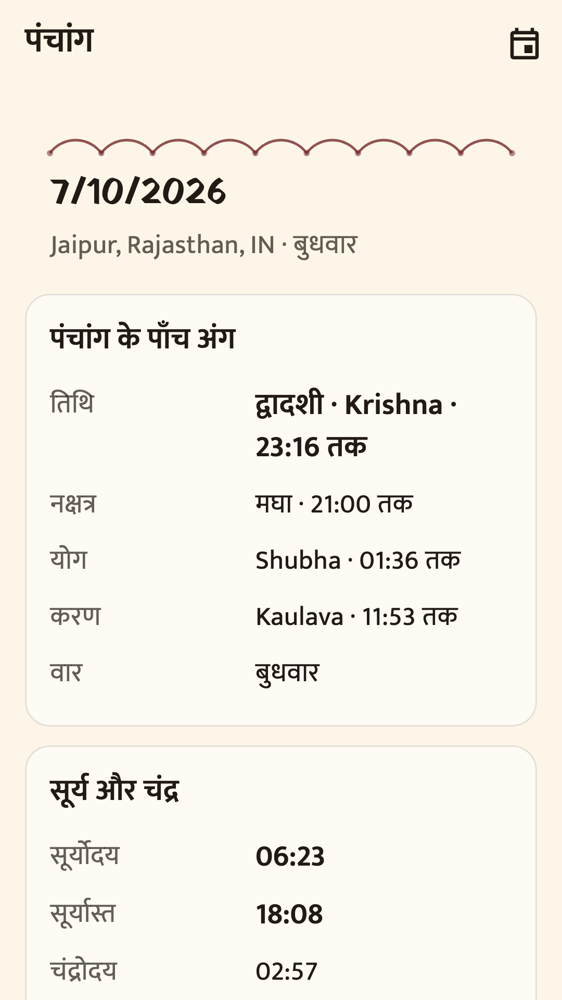
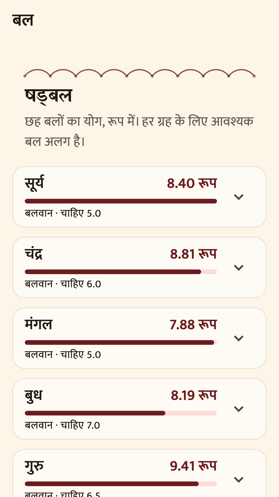
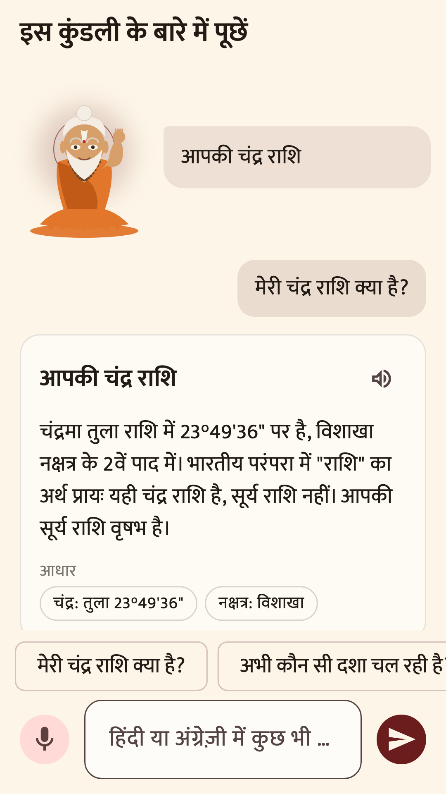
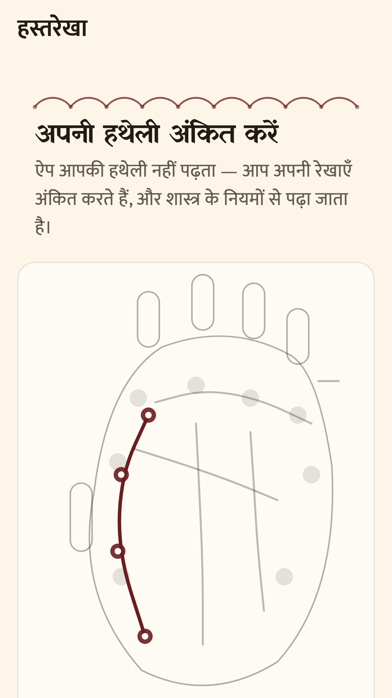
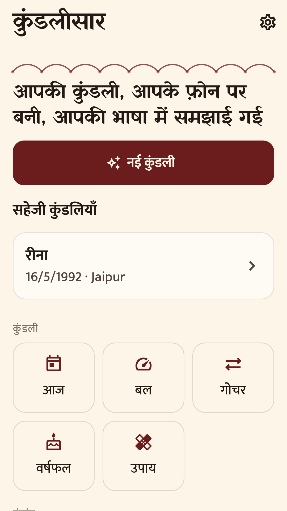

Flutter · Dart · own ephemeris
KundliSaar कुंडलीसार
A Vedic astrology app that computes the planets itself, on the handset, with the radio off.
Flutter · Dart · own ephemeris
A Vedic astrology app that computes the planets itself, on the handset, with the radio off.
Every astrology app leans on Swiss Ephemeris. Its licence is AGPL, which would have forced this whole project open and made the App Store a dead end. Paying for the commercial licence was not realistic either.
So I built the ephemeris. A Poisson series fitted to NASA JPL’s DE440s and emitted as Dart tables: planetary longitudes land within about an arcsecond from 1900 to 2070, computed on the phone in milliseconds, with no network.
Sixteen divisional charts, Vimshottari to three levels with dated periods, Tajika varshphal with sahams and Mudda dasha, ashtakavarga, shadbala, Ghat and Sarvatobhadra chakras, and a full panchang.
A predictive layer that names the chart factor behind every sentence it writes, says how many factors agree, and where the classical texts disagree shows both positions with the argument for each.
Over 450 tests. The ephemeris is checked against skyfield and DE440s; the panchang against published almanacs, matching to the minute.
It refuses to predict death, illness, pregnancy, exam results, court outcomes or investments, and it never sells a remedy out of fear.






Tell me what you have in mind. I answer the same day.
Send your requirements